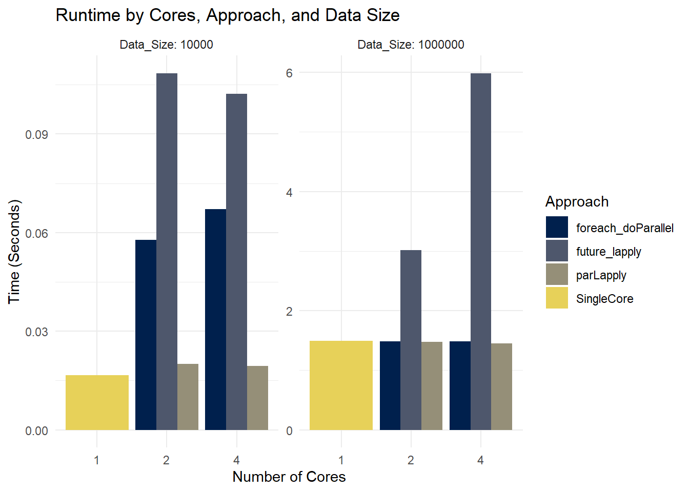
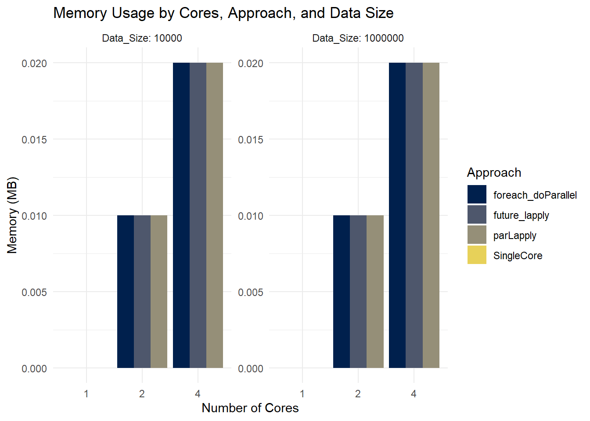

Chapter 57 High-Performance Computing
Abstract. Analyses that once fit comfortably on a laptop now routinely exceed it, whether through data volume, simulation scale, or the resampling that modern inference demands. This chapter covers high-performance computing for applied data analysis in R, treating it as an engineering discipline rather than a matter of requesting more cores. It reviews the parallel ecosystem: the parallel package, foreach, the future framework and its interchangeable backends, BiocParallel, snow, and sparklyr for Apache Spark. Amdahl’s law supplies the ceiling, since speedup approaches a fixed limit set by the serial fraction however many workers are added, so profiling decides whether parallelizing is worth attempting. Practical guidance covers task granularity, resource estimation before submission, and testing on a subset first. Three failure modes then receive separate treatment, because they corrupt results rather than merely slowing them and none of them raises an error. Random number streams can overlap across workers, or vary with the worker count, breaking both independence and reproducibility. Memory is duplicated rather than shared under process-based backends. Tasks can fail silently, leaving an analysis to proceed over an unknown subset of its sample. A worked R workflow makes the recommendations concrete.
Keywords: High-performance computing; Parallel computing; Distributed computing; Apache Spark; Profiling; Reproducibility
High-Performance Computing (HPC) refers to the use of advanced computational systems and techniques to solve complex, resource-intensive problems that are impractical or inefficient on standard computing platforms. In the realm of data analysis, HPC enables the handling of large-scale data processing, computationally intensive simulations, and advanced statistical modeling, particularly in fields like finance, marketing, bioinformatics, and engineering.
By leveraging parallel processing, either through multi-core processors on a single machine or distributed nodes in a computing cluster, HPC environments dramatically reduce execution times and expand analytical capabilities.
In the R programming ecosystem, several packages and frameworks facilitate parallel and distributed computing. These include:
parallel: Built-in R package for basic parallel operations.foreach+doParallel: Enables parallel loops over independent tasks.future: Provides a unified API for parallelization with different backends.BiocParallel: Optimized for parallel evaluation in bioinformatics pipelines.sparklyr: Connects R to Apache Spark for big data processing.snow: For simpler parallel computing on Windows and Linux clusters.
However, effective HPC implementation requires more than just code parallelization. Testing, monitoring, estimating resource requirements, and iterative scaling are all essential components to maximize efficiency and prevent costly mistakes.
A chapter on computation may look out of place in a volume about whether results deserve to be believed. It is not. Scale introduces failure modes that have nothing to do with speed and everything to do with correctness, and they share the property of being silent. A parallel simulation whose workers draw from overlapping random streams produces replicates that are not independent, and it reports a standard error computed as though they were. A job that loses three of its two hundred tasks to a memory limit returns a result assembled from a hundred and ninety-seven, and unless the code was written to notice, nothing in the output says so. A pipeline that cannot be run again because it depended on the number of cores available that afternoon is not reproducible, whatever the analysis script says.
None of these announce themselves. They produce numbers, the numbers look reasonable, and the analysis proceeds. The practices in this chapter are worth the trouble because they convert silent failures into loud ones.
57.1 What Parallelism Can and Cannot Buy
Before choosing a backend it is worth knowing the ceiling. Any computation divides into a portion that can be run in parallel and a portion that cannot: reading the input, setting up, combining results, writing the output. If \(p\) is the fraction of total runtime that parallelizes and \(k\) is the number of workers, the best achievable speedup is
\[ S(k) \;=\; \frac{1}{(1 - p) + \dfrac{p}{k}}, \]
which is Amdahl’s law. The consequence is unintuitive and worth internalizing. As \(k\) grows without bound, \(S\) does not. It approaches \(1/(1-p)\), a ceiling fixed entirely by the serial fraction. A job that is 90% parallelizable can never run more than ten times faster no matter how large the cluster, and it reaches a speedup of five at eight workers, at which point doubling the allocation again buys about 25%. A job that is 50% parallelizable never beats a factor of two.
Two practical conclusions follow. The first is that profiling is not optional preparation but the step that determines whether any of this is worth doing: an hour spent parallelizing a routine that accounts for 15% of runtime is an hour spent buying a maximum improvement of 18%. The second is that requesting more cores has sharply diminishing returns, and past a point it has negative ones, because the formula above ignores the cost of coordination. Real parallel overhead grows with \(k\): workers must be started, data must be copied to them, and results must be collected. Where that cost grows faster than the work shrinks, adding workers makes the job slower. This is the usual explanation for a benchmark that improves from two cores to eight and then degrades at thirty-two.
The corollary for task granularity is direct. Overhead is paid per task, so a loop of a million tasks each lasting a millisecond spends most of its life in dispatch. Chunking that same work into a few hundred tasks of a few seconds each pays the overhead a few hundred times instead of a million, and typically runs an order of magnitude faster with no change to the computation itself.
57.2 Reproducibility Under Parallel Execution
The single most common way for a parallel analysis to be quietly wrong involves random numbers, and it is worth stating plainly because the failure produces no error.
R’s generator is a deterministic stream advanced by a seed. Calling set.seed(123) and then spawning workers does not give each worker its own stream. Depending on the backend it may give them all the same stream, in which case a simulation of ten thousand replicates across eight workers contains eight identical blocks of twelve hundred and fifty, and the variance across replicates is understated accordingly. Alternatively the workers may be seeded from the system clock or the process id, in which case the streams differ but the run is not reproducible, and no amount of re-running the script recovers the reported numbers.
Neither failure raises a warning. Both produce output of the right shape and plausible magnitude.
The fix is a generator designed for the purpose. L’Ecuyer’s combined multiple-recursive generator can be partitioned into streams that are guaranteed not to overlap, and every parallel framework in R exposes it:
- With the
parallelpackage, setRNGkind("L'Ecuyer-CMRG"), thenset.seed(), thenclusterSetRNGStream(cl, seed). - With
futureandfuture.apply, passfuture.seed = TRUE, which handles stream assignment automatically. This is not the default, and code that omits it is exposed to the first failure above. - With
foreach, use thedoRNGbackend rather thandoParallelalone. A plain%dopar%loop drawing random numbers is not reproducible.
There is a further subtlety that catches people who have done everything else correctly: results must not depend on the number of workers. If each task carries its own stream, splitting ten thousand tasks across four workers or across sixteen yields identical output, which is what reproducibility requires, since the person rerunning the analysis has a different machine. If instead each worker seeds once and its tasks share a stream, the assignment of draws to tasks changes with the worker count, and so does the answer. Verifying that a run with two workers matches a run with eight is a cheap and unusually informative test, and it belongs in the test suite of any simulation whose results will be published.
57.3 Memory, Failure, and Partial Results
Two further properties of parallel execution deserve attention before the practices below.
Memory does not parallelize the way runtime does. On Linux and macOS, forked workers share memory with the parent copy-on-write, so an object is duplicated only when a worker modifies it. On Windows, and in any PSOCK or multisession backend, each worker is a fresh R process that receives its own copy of everything it touches. Eight workers operating on a four-gigabyte object therefore need thirty-two gigabytes rather than four, and the job dies at the memory limit having consumed the allocation without producing anything. This is the most common reason a workflow that runs on a laptop fails on a cluster, and it is why memory needs estimating separately from runtime rather than being assumed to follow it.
A failed worker is not necessarily a failed job. By default, foreach will abort the whole loop when one task raises an error, which is inconvenient but at least visible. Setting .errorhandling = "pass" or "remove" changes that: the loop completes, and the result silently contains error objects or is simply shorter than expected. Either behaviour can be the right choice for a long job over noisy inputs, where a handful of failures is expected and restarting from the beginning is unaffordable. Neither is safe unless the code afterwards checks how many results came back and what they are. The rule is to count: if two hundred tasks were dispatched, assert that two hundred results returned before using them, and record which ones did not. An analysis run over an unknown subset of its intended sample is not the analysis that gets described in the paper.
57.4 Best Practices for HPC in Data Analysis
- Test First on a Small Scale
Before scaling your analysis to full production, begin with small-scale tests. This ensures your code runs as expected, while also providing crucial information about resource usage.
- Start small: Run the analysis on a subset of your data (e.g., 1% or 10% of the total).
- Measure resource usage:
- Execution time (wall clock time vs. CPU time).
- Memory footprint.
- CPU and disk I/O utilization.
- Record the metrics:
- Create logs or structured reports for future reference.
Example:
If you’re modeling customer churn on a dataset of 10 million records, start with 100,000 and profile its behavior.
- Estimate Resource Requirements
Use insights from small-scale tests to extrapolate the resources needed for the full analysis.
- Estimate CPU cores, memory, and execution time requirements.
- Add an overhead buffer:
- Parallel tasks introduce communication overhead and synchronization delays.
- Real-world data can have higher complexity than test data.
Guideline: If a small test consumes 1 GB of RAM and runs in 10 minutes on a single core, a 100x dataset may not scale linearly. Communication costs, disk I/O, and parallel inefficiencies could require a different scaling factor.
- Parallelize Strategically
Not all parts of your analysis benefit equally from parallelization. Identify and prioritize computational bottlenecks.
- Analyze your workflow:
- Data ingestion: Can you parallelize reading large files or querying databases?
- Transformations: Are data wrangling tasks parallelizable?
- Modeling/Training: Can independent model fits or simulations be distributed?
- Balance granularity:
- Overly fine-grained parallelization leads to high communication overhead.
- Coarser tasks are generally more efficient in parallel environments.
Tip: Use embarrassingly parallel strategies where possible, since these tasks require minimal communication between workers.
- Use Adequate Scheduling and Queue Systems
In HPC clusters, job scheduling systems manage resource allocation and prioritize workloads.
Common systems include:
Slurm (Simple Linux Utility for Resource Management)
PBS (Portable Batch System)
LSF (Load Sharing Facility)
SGE (Sun Grid Engine)
Best practices:
Write job submission scripts specifying:
Wall time limits.
Memory and CPU requests.
Node allocation (if required).
Monitor jobs:
Examine logs for resource utilization (memory, time, CPU load).
Use scheduler tools (e.g.,
sacctin Slurm) to assess historical performance.
Example Slurm job script:
#!/bin/bash
#SBATCH --job-name=churn_model
#SBATCH --output=churn_model_%j.out
#SBATCH --ntasks=1
#SBATCH --cpus-per-task=8
#SBATCH --mem=32G
#SBATCH --time=04:00:00
module load R/4.2.0
Rscript run_churn_model.R- Incremental Scaling
Resist the temptation to scale from small tests directly to massive production jobs.
Iterate gradually:
- Start with small jobs, progress to medium-sized runs, and only then scale to full production.
Monitor I/O overhead:
Parallel jobs often stress shared storage systems.
Optimize data locality and prefetching if possible.
Tip: Use asynchronous job submission (batchtools::submitJobs() or future::future()) to manage job batches efficiently.
- Documentation and Reporting
Good documentation facilitates reproducibility and future optimization.
Maintain a structured report of each run, including:
Input parameters: Dataset size, preprocessing steps, model parameters.
Cluster specification: Number of nodes, CPUs per node, memory allocations.
Execution logs: Total run time, CPU utilization, memory usage.
Software environment: R version, package versions, job scheduler version.
Template for documentation:
| Parameter | Value |
|---|---|
| Dataset size | 10 million records |
| Model type | Random Forest (500 trees) |
| Nodes used | 4 |
| CPUs per node | 8 |
| Memory per node | 32 GB |
| Wall time | 2 hours |
| Software environment | R 4.2.0, ranger 0.14.1 |
| Scheduler | Slurm 20.11.8 |
57.5 Example Workflow in R
Below is a conceptual R workflow demonstrating how to:
Load data and define a test subset.
Perform computations in parallel for the test subset using the
parallelorforeachapproach.Measure resource usage (basic approach in R, with the cluster’s job scheduler logs for deeper HPC environment metrics).
Extrapolate resource usage.
Submit a scaled-up job with new allocations.
57.6 Recommendations
- Incremental Testing
- Always begin with a small fraction of the data to validate your HPC pipeline and catch issues early.
- Collect critical metrics:
- Run time (both wall clock time and CPU time).
- CPU utilization (are all requested cores working efficiently?).
- Memory usage (peak RAM consumption).
- Use tools such as
system.time(),profvis::profvis(), orRprof()in R to profile your code locally before scaling.
- Resource Allocation
- Use test metrics to guide your resource requests (memory, cores, and wall time).
- Avoid:
- Under-requesting: jobs may fail due to out-of-memory (OOM) errors or timeouts.
- Over-requesting: results in longer queue times, resource underutilization, and potential policy violations on shared systems.
- Rule of thumb:
- Request slightly more memory than observed usage (e.g., 10-20% buffer).
- Request wall time based on observed run time, plus an additional safety margin (e.g., 15-30%).
Parallelization Strategy
- Identify tasks that can be embarrassingly parallel:
- Monte Carlo simulations.
- Bootstrap resampling.
- Model fitting on independent data partitions.
- Focus on minimizing communication overhead:
- Send only essential data between processes.
- Use shared-memory parallelism when possible to avoid data duplication.
- For distributed nodes, serialize and compress data before transmission when feasible.
- Identify tasks that can be embarrassingly parallel:
Monitoring and Logging
- Use HPC job scheduler logs to track job performance:
- Slurm:
sacct,scontrol show job, orseff. - PBS/SGE: check standard output/error logs and resource summaries.
- Slurm:
- Capture R logs and console output:
- Direct output to log files using
sink()or by redirecting standard output in your job script.
- Direct output to log files using
- Record:
- Start and end times.
- Memory and CPU metrics.
- Warnings and error messages.
- Use HPC job scheduler logs to track job performance:
Scaling
- For large-scale runs (e.g., 100x your initial test), do not jump from small-scale to full-scale directly.
- Run intermediate-scale tests (e.g., 10x, 50x).
- Confirm resource usage scales as expected.
- Watch for non-linear effects:
- Increased I/O overhead from parallel file reads/writes.
- Communication overhead in distributed tasks.
- Load balancing inefficiencies (stragglers can delay job completion).
- For large-scale runs (e.g., 100x your initial test), do not jump from small-scale to full-scale directly.
Future-Proofing
- HPC hardware and software evolve rapidly:
- Faster networks (InfiniBand, RDMA).
- Improved schedulers and resource managers.
- Containerization (Docker, Singularity) for reproducible environments.
- Regularly test and validate reproducibility after:
- Software/package updates.
- Hardware upgrades.
- HPC policy changes (e.g., new quotas or job priorities).
- HPC hardware and software evolve rapidly:
57.7 Demonstration
The demo below compares runtime and memory across the parallel back-ends (parLapply, foreach/doParallel, and future_lapply) for small and large workloads at one, two, and four cores.
###############################################################
# HPC Workflow Demo in R: Scaling Resources and Parallelism
###############################################################
# -- 1. Libraries --
library(parallel) # base parallel
library(doParallel) # foreach backend
library(foreach) # parallel loops
library(future) # futures
library(future.apply) # apply with futures
library(ggplot2) # plotting results
# Optional: install.packages("pryr") for memory usage (optional)
# library(pryr)
###############################################################
# -- 2. Generate or Load Data (Small and Large for Scaling) --
###############################################################
set.seed(42)
n_small <- 1e4 # Small dataset (test)
n_large <- 1e6 # Large dataset (scale-up demo)
generate_data <- function(n) {
data.frame(
id = 1:n,
x = rnorm(n, mean = 50, sd = 10),
y = rnorm(n, mean = 100, sd = 25)
)
}
data_small <- generate_data(n_small)
data_large <- generate_data(n_large)
###############################################################
# -- 3. Preprocessing Function --
###############################################################
clean_and_transform <- function(df) {
df$dist <- sqrt(df$x ^ 2 + df$y ^ 2)
return(df)
}
data_small_clean <- clean_and_transform(data_small)
data_large_clean <- clean_and_transform(data_large)
###############################################################
# -- 4. Heavy Computation (Simulated Workload) --
###############################################################
heavy_computation <- function(df, reps = 500) {
replicate(reps, sum(df$dist))
}
###############################################################
# -- 5. Resource Measurement Helper Function --
###############################################################
measure_resources <-
function(expr, approach_name, data_size, cores) {
start_time <- Sys.time()
# baseline_mem <- pryr::mem_used() # If pryr is available
result <- eval(expr)
end_time <- Sys.time()
time_elapsed <-
as.numeric(difftime(end_time, start_time, units = "secs"))
# used_mem <- as.numeric(pryr::mem_used() - baseline_mem) / 1e6 # MB
# If pryr isn't available, approximate:
used_mem <- as.numeric(object.size(result)) / 1e6 # MB
return(
data.frame(
Approach = approach_name,
Data_Size = data_size,
Cores = cores,
Time_Sec = time_elapsed,
Memory_MB = round(used_mem, 2)
)
)
}
###############################################################
# -- 6. Define and Run Parallel Approaches --
###############################################################
# Collect results in a dataframe
results <- data.frame()
### 6.1 Single Core (Baseline)
res_single_small <- measure_resources(
expr = quote(heavy_computation(data_small_clean)),
approach_name = "SingleCore",
data_size = nrow(data_small_clean),
cores = 1
)
res_single_large <- measure_resources(
expr = quote(heavy_computation(data_large_clean)),
approach_name = "SingleCore",
data_size = nrow(data_large_clean),
cores = 1
)
results <- rbind(results, res_single_small, res_single_large)
# clusterExport(cl, varlist = c("heavy_computation"))
### 6.2 Base Parallel (Cross-Platform): parLapply (Cluster Based)
cores_to_test <- c(2, 4)
for (cores in cores_to_test) {
cl <- makeCluster(cores)
# Export both the heavy function and the datasets
clusterExport(cl,
varlist = c(
"heavy_computation",
"data_small_clean",
"data_large_clean"
))
res_par_small <- measure_resources(
expr = quote({
parLapply(
cl = cl,
X = 1:cores,
fun = function(i)
heavy_computation(data_small_clean)
)
}),
approach_name = "parLapply",
data_size = nrow(data_small_clean),
cores = cores
)
res_par_large <- measure_resources(
expr = quote({
parLapply(
cl = cl,
X = 1:cores,
fun = function(i)
heavy_computation(data_large_clean)
)
}),
approach_name = "parLapply",
data_size = nrow(data_large_clean),
cores = cores
)
stopCluster(cl)
results <- rbind(results, res_par_small, res_par_large)
}
### 6.3 foreach + doParallel
for (cores in cores_to_test) {
cl <- makeCluster(cores)
registerDoParallel(cl)
clusterExport(cl,
varlist = c(
"heavy_computation",
"data_small_clean",
"data_large_clean"
))
registerDoParallel(cl)
# Small dataset
res_foreach_small <- measure_resources(
expr = quote({
foreach(i = 1:cores, .combine = c) %dopar% {
heavy_computation(data_small_clean)
}
}),
approach_name = "foreach_doParallel",
data_size = nrow(data_small_clean),
cores = cores
)
# Large dataset
res_foreach_large <- measure_resources(
expr = quote({
foreach(i = 1:cores, .combine = c) %dopar% {
heavy_computation(data_large_clean)
}
}),
approach_name = "foreach_doParallel",
data_size = nrow(data_large_clean),
cores = cores
)
stopCluster(cl)
results <- rbind(results, res_foreach_small, res_foreach_large)
}
### 6.4 future + future.apply
for (cores in cores_to_test) {
plan(multicore, workers = cores) # multicore only works on Unix; use multisession on Windows
# Small dataset
res_future_small <- measure_resources(
expr = quote({
future_lapply(1:cores, function(i)
heavy_computation(data_small_clean))
}),
approach_name = "future_lapply",
data_size = nrow(data_small_clean),
cores = cores
)
# Large dataset
res_future_large <- measure_resources(
expr = quote({
future_lapply(1:cores, function(i)
heavy_computation(data_large_clean))
}),
approach_name = "future_lapply",
data_size = nrow(data_large_clean),
cores = cores
)
results <- rbind(results, res_future_small, res_future_large)
}
# Reset plan to sequential
plan(sequential)
###############################################################
# -- 7. Summarize and Plot Results --
###############################################################
# Print table
print(results)
#> Approach Data_Size Cores Time_Sec Memory_MB
#> 1 SingleCore 10000 1 0.01664901 0.00
#> 2 SingleCore 1000000 1 1.49522400 0.00
#> 3 parLapply 10000 2 0.02012801 0.01
#> 4 parLapply 1000000 2 1.47432709 0.01
#> 5 parLapply 10000 4 0.01949501 0.02
#> 6 parLapply 1000000 4 1.45394707 0.02
#> 7 foreach_doParallel 10000 2 0.05774093 0.01
#> 8 foreach_doParallel 1000000 2 1.48398590 0.01
#> 9 foreach_doParallel 10000 4 0.06711507 0.02
#> 10 foreach_doParallel 1000000 4 1.48212886 0.02
#> 11 future_lapply 10000 2 0.10845399 0.01
#> 12 future_lapply 1000000 2 3.01852703 0.01
#> 13 future_lapply 10000 4 0.10219502 0.02
#> 14 future_lapply 1000000 4 5.98486209 0.02
# Save to CSV
# write.csv(results, "HPC_parallel_results.csv", row.names = FALSE)
# Plot Time vs. Data Size / Cores
ggplot(results, aes(x = as.factor(Cores), y = Time_Sec, fill = Approach)) +
geom_bar(stat = "identity", position = "dodge") +
facet_wrap( ~ Data_Size, scales = "free", labeller = label_both) +
scale_fill_viridis_d(option = "cividis", end = 0.9) +
labs(title = "Runtime by Cores, Approach, and Data Size",
x = "Number of Cores",
y = "Time (Seconds)") +
theme_minimal()
# Plot Memory Usage
ggplot(results, aes(x = as.factor(Cores), y = Memory_MB, fill = Approach)) +
geom_bar(stat = "identity", position = "dodge") +
facet_wrap(~ Data_Size, scales = "free", labeller = label_both) +
scale_fill_viridis_d(option = "cividis", end = 0.9) +
labs(title = "Memory Usage by Cores, Approach, and Data Size",
x = "Number of Cores",
y = "Memory (MB)") +
theme_minimal()
Runtime Plot
Small Dataset: All methods are so fast that you are mostly seeing overhead differences. The differences in bar heights reflect how each parallel framework handles overhead.
Large Dataset: You see more separation. For instance,
parLapplywith 2 cores might be slower than 1 core due to overhead. At 4 cores, it might improve or not, depending on how the overhead and actual workload balance out.
Memory Usage Plot
- All bars hover around 0.02 MB or so because you are measuring the size of the returned result, not the in-memory size of the large dataset. The function
object.size(result)is not capturing total RAM usage by the entire parallel job.
- All bars hover around 0.02 MB or so because you are measuring the size of the returned result, not the in-memory size of the large dataset. The function